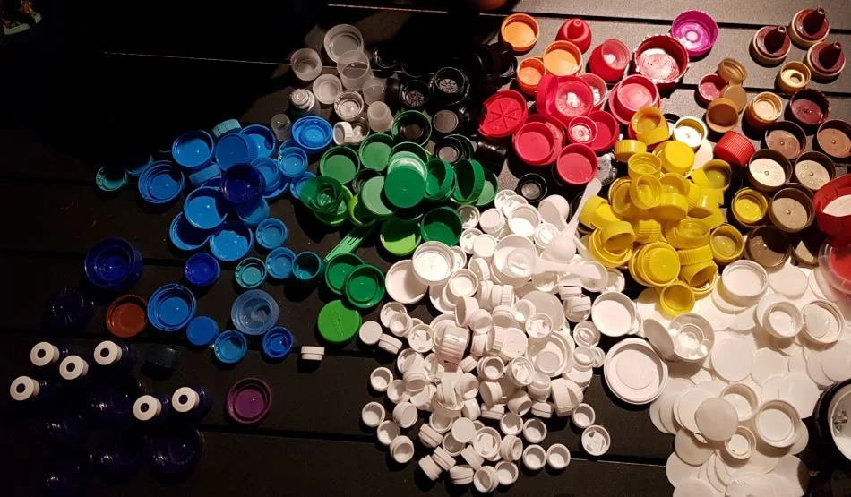
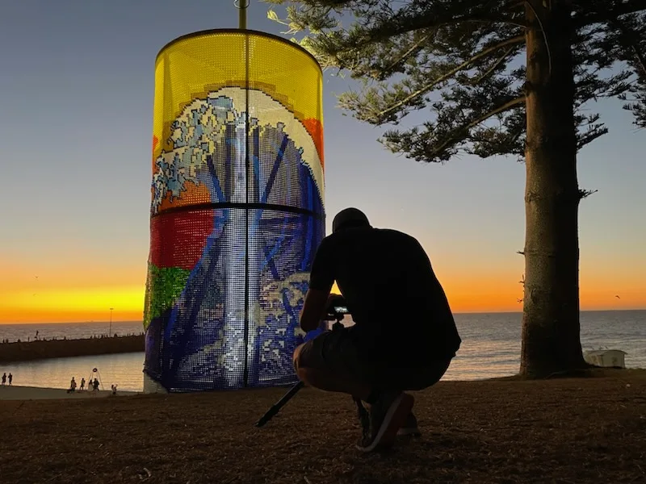
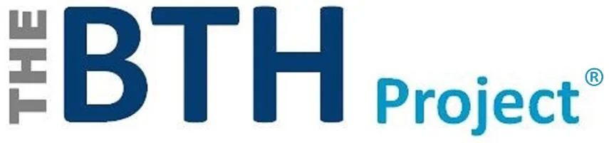

Start where
you are.
Bring the 12Rs into your everyday life. Explore the chapters, try small actions and keep a record of your own journey.
A personal journey, with a bigger picture.SUSTAINABILITY. COMMUNITY. LEGACY.
You care about the world we leave behind.
Let’s work out what we can do, together.
The BTH 12Rs is a monthly sustainability journey. One chapter at a time, turn good intentions into everyday actions — at home, at work and in your community.
A STORY THAT STARTS WITH US
When sustainability feels overwhelming, it helps to have a place to start. Em Charlton created the BTH 12Rs to bring people together around a practical, shared way forward.
It begins with what we value, grows through what we learn, and comes to life in what we do. No need to have all the answers before you begin.
Meet the project behind the programme


THE BTH 12R’S® STORYLINE
Take time to explore a theme, put it into practice and notice what changes. Then build on it with the next chapter.
EXPLORE A CHAPTER 01 — 12
Begin with the people, places and living things you care about. What would you like your everyday actions to protect?
A SMALL PLACE TO STARTChoose one place that matters to you. Take a moment to notice it.
Chapter prompts are illustrative concept copy for Em’s review. The original framework and sequence are retained.
Take part as yourself or your household, or bring the programme to your organisation.
Make space for a new theme, a practical resource and something to try.
Keep a simple record of your actions and what you learn along the way.
THERE’S A PLACE FOR YOU HERE
Bring the 12Rs into your everyday life. Explore the chapters, try small actions and keep a record of your own journey.
A personal journey, with a bigger picture.Adopt the programme with a named coordinator, agreed resources and a clear way to understand participation.
An organisation application and agreed licence.This is a concept demonstration. Programme fees, pilot places and dates are still to be agreed. No registration is sent.
FROM INTEREST TO EVERYDAY ACTION
Know where you are, see what comes next, and look back at the actions you’ve taken.
The proposed pilot starts with three monthly chapters. Try a check-in here to see how a participant’s progress could work.
Self-reported actions, not verified environmental outcomes. All three sample chapters are open for this preview.
MAKE ROOM FOR COLLECTIVE ACTION
Give your people a shared sustainability journey they can put into practice. The proposed organisation offer brings together the 12Rs programme, coordination and useful participation reporting.
Adopt the framework under an agreed licence, with clear terms for your audience, resources and period of use.
Keep organisational participation separate from household accounts, with a nominated person to support your group.
Report participation and declared actions, retaining units and evidence status where relevant.
A conversation can be a starting point.Ask about a paid workplace talk, workshop or facilitated pilot. Scope, fees and availability would be confirmed with Em.
THE ROOTS OF THE STORY
The 12Rs sits within The BTH Project, founded by Em Charlton. Its story also connects with community resource recovery and a rather memorable emu.

Created by Em Charlton, an educator, facilitator and community volunteer in Western Australia. A practical story of hope, shaped by care for the next generation.
More about EmA FEW THINGS YOU MIGHT BE WONDERING
The proposed journey is designed to give you a manageable place to begin, with a theme to explore each month. You can bring curiosity and build from there.
Businesses, councils, schools and community groups use the organisation route, even when just one person coordinates participation. The application captures the organisation type and proposed use so Em can agree the appropriate licence and support.
The proposal recommends a shared starting group and three monthly chapters, with resources and simple check-ins. Content, participants, fees and dates need to be agreed before the pilot opens.
This site demonstrates the proposed experience. The joining forms do not send registrations, create accounts or take payments. Sample progress stays in your browser and can be reset.
THE NEXT CHAPTER STARTS WITH US